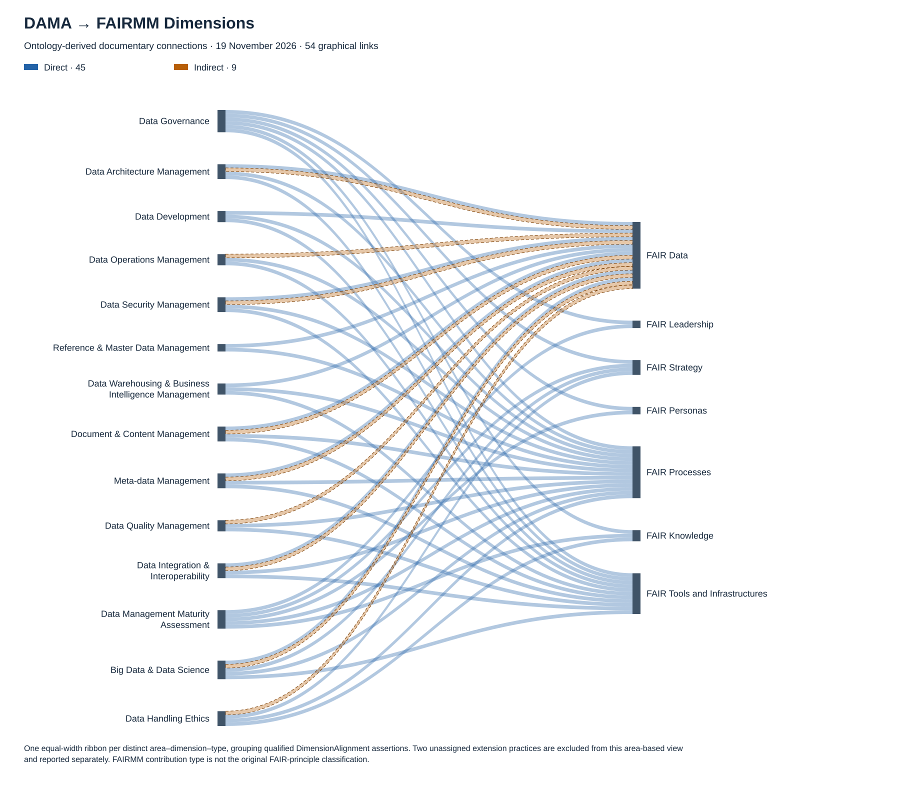

Which DAMA areas and topics support each FAIRMM dimension through qualified Direct or Indirect assertions?
One equal-width ribbon per distinct area–dimension–type, grouping qualified DimensionAlignment assertions. Two unassigned extension practices are excluded from this area-based view and reported separately. FAIRMM contribution type is not the original FAIR-principle classification.

Interactive diagram · Offline interaction · PNG · SPARQL · Extracted rows